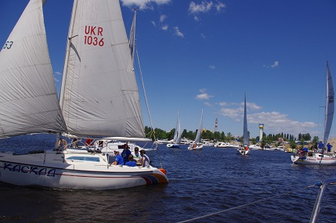

Царський подарунок від яхт-клубу
Так, справді саме таким - «царським» можна назвати подарунок журналістам до Дня професійного свята від Київського міського крейсерського яхт-клубу, співзасновником якого є «Авто-радіо». Більше 30 представників ЗМІ зібрали справжні професіонали - яхтсмени 4 червня на своїй базі, на столичній Дніпровській набережній, щоб не просто познайомити з історією виникнення Крейсерського яхт-клубу, (а він має справді славну і багату на події сорокарічну історію), щоб не просто дати можливість доторкнутися до яхт, (які навіть в кругосвітній подорожі побували), щоб не просто поспілкуватися з мужніми людьми, (а саме такими відтепер буде вважати їх кожен журналіст, який той червневий день провів у клубі), а щоб ще й кожен із журналістів взяв участь у Першому «Вітрильному Жур-Турі».
Що купити в Гонконзі: гід по торговим центрам
Гонконг завсідник рейтингу "десять кращих міст для шопінгу в світі". Від вибору електронної техніки тут починає мимоволі сіпатися повіка, а кількість шопінг-молів змушує засумніватися в тому, що є життя поза магазинами. Додайте сюди відсутність податку на додану вартість та отримайте справжній рай для шопінгу.